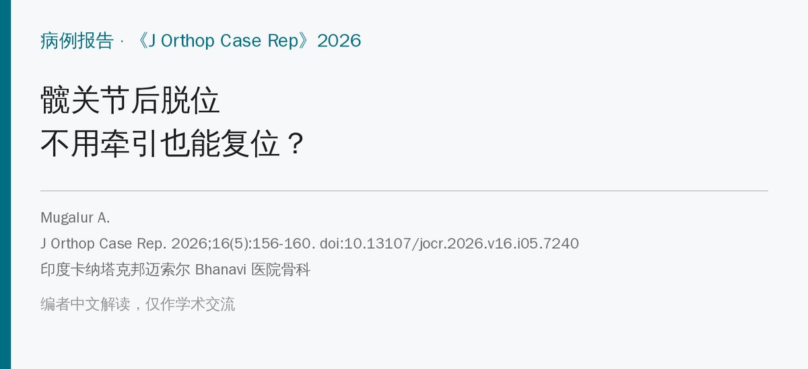
🔖原文信息（编者中文重排）
📚 文献信息
▪ Mugalur A. “No Traction” Technique: A Novel, Simple, Easy, and Ergonomic Maneuver to Reduce Posterior Dislocation of the Hip Joint – A Case Report. J Orthop Case Rep. 2026;16(5):156-160. doi:10.13107/jocr.2026.v16.i05.7240
▪ 作者单位：印度卡纳塔克邦迈索尔 Bhanavi 医院骨科
▪ 文章类型：病例报告（2 例，介绍一种新的复位手法）
• 髋关节后脱位的各种闭合复位法，核心都是牵引；作者提出一种完全不牵引的手法
• 口诀：屈—内收—内旋—外展—外旋—伸——先过屈、内收、内旋，再保持过屈外展，最后外旋并伸直髋膝
• 仰卧位、一个人就能做，不需要助手和特殊器械，术者腰背几乎不用力
• 但只有 2 例、同一位术者，两例都在腰麻下完成，还谈不上“验证”
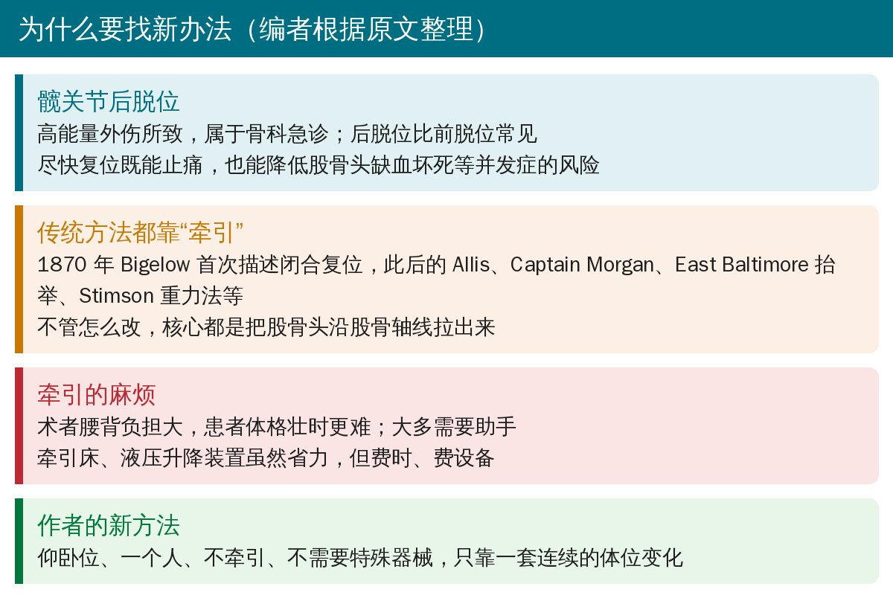
🔖背景（编者根据原文整理）
髋关节脱位多由车祸等高能量外伤引起，后脱位比前脱位常见。尽快复位不仅能缓解疼痛，也能降低股骨头缺血坏死等并发症的风险。
自 1870 年 Bigelow 描述闭合复位以来，各种改良方法层出不穷，但作者指出，它们的共同点是都要牵引，区别只在于怎么省力：
原文讨论中提到的复位方法（编者整理）
| 思路 | 代表方法 |
|---|---|
| 经典仰卧牵引 | Allis、Bigelow（术者腰背负担大，患者壮时尤其难） |
| 改良以减轻腰背负担 | Lefkowitz、Captain Morgan、Tulsa、Rochester、Whistler、East Baltimore 抬举、Piggy Back |
| 改变患者体位 | Skoff、对抗牵引（侧卧）；Stimson 重力法（俯卧） |
| 加辅助牵引或支点 | Howard 法、侧方牵引、屈曲内收法（需助手推股骨头）、足支点法、Waddell 法 |
| 借助设备 | 牵引床（Shigemura 法）、液压升降装置（Zwank 法）——省力但费时费设备 |
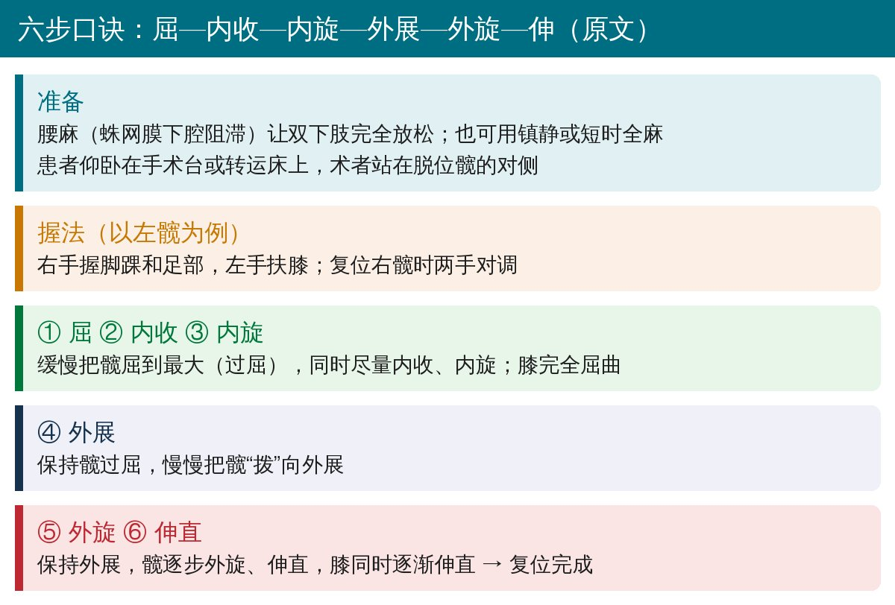
🔖操作要点（据原文整理）
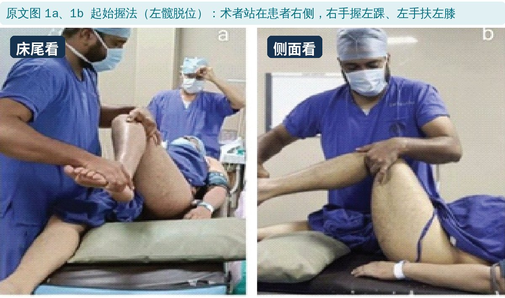
🔖原文图 1a、1b：起始握法
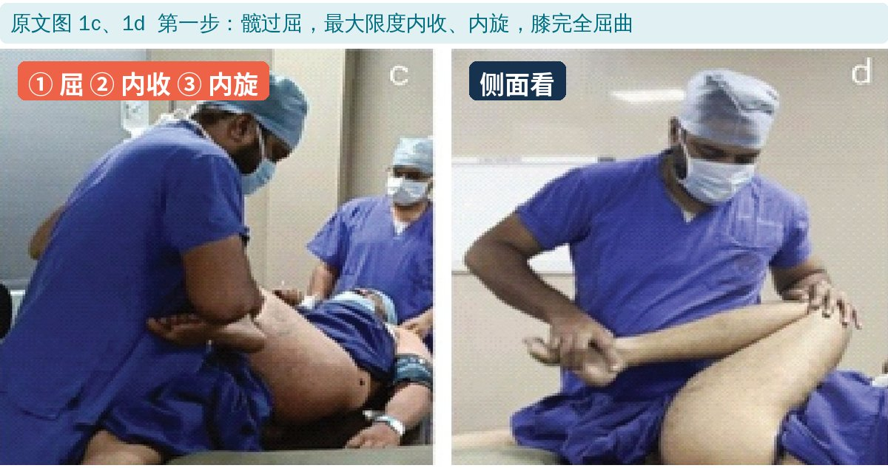
🔖原文图 1c、1d：过屈、内收、内旋
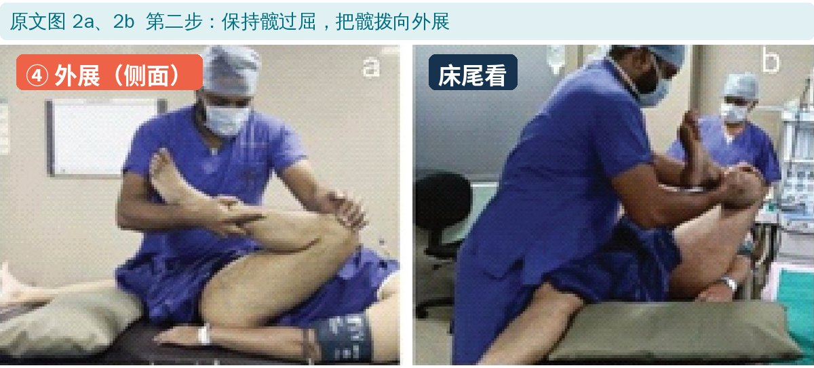
🔖原文图 2a、2b：保持过屈，外展
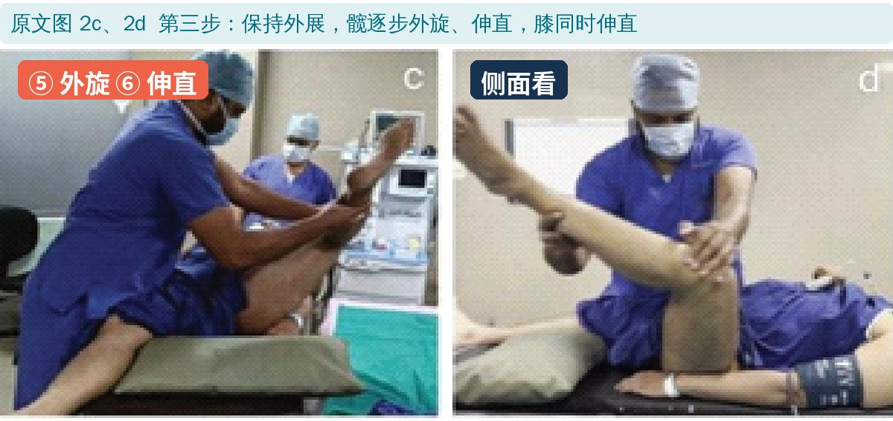
🔖原文图 2c、2d：外旋、伸直
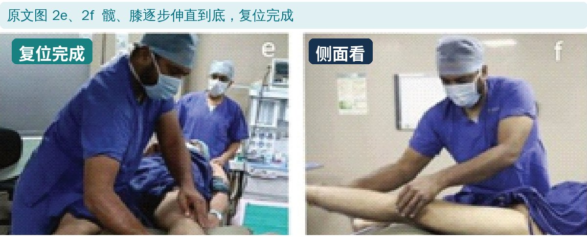
🔖原文图 2e、2f：复位完成
整个过程每一步都是“逐渐”完成的，原文没有描述需要用力牵拉或推压股骨头的环节。作者认为，正因为不需要用力，术者和患者的体格都不影响操作，转运床上也能做。
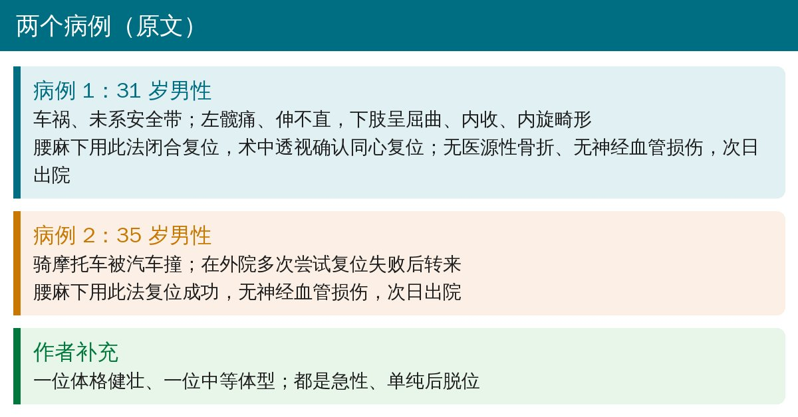
🔖两个病例（据原文整理）
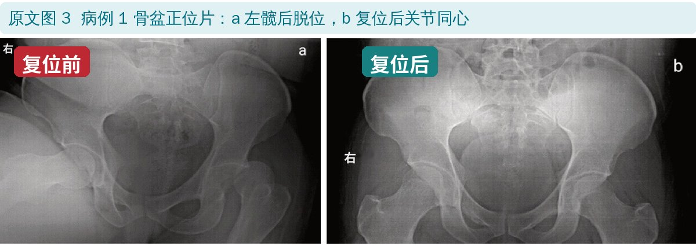
🔖原文图 3：病例 1 复位前后
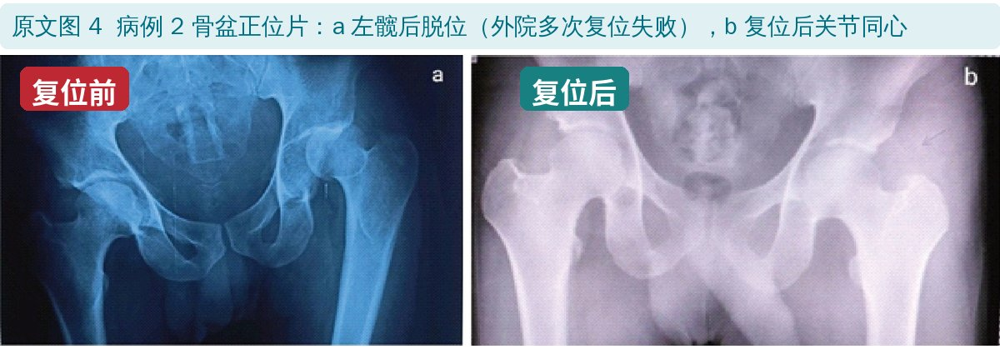
🔖原文图 4：病例 2 复位前后
病例 2 在外院多次复位失败后转来，用这一方法复位成功，这是全文最有说服力的一点。不过原文没写外院用的是什么方法、是否在麻醉下进行，所以两者没法直接比较。
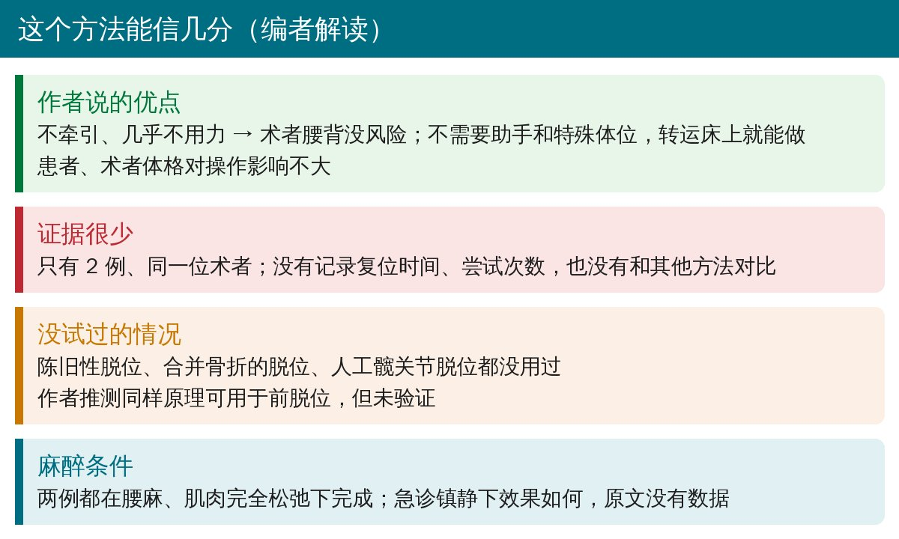
🔖编者解读
• 病例报告：2 例、同一位术者，没有复位时间、尝试次数、并发症随访等数据
• 两例都在腰麻、肌肉完全松弛下完成；急诊科常用的镇静条件下是否同样容易，原文没有数据
• 陈旧性脱位、合并髋臼或股骨头骨折的脱位、人工关节脱位都没有试过
• 版权声明写的是“CC BY 4.0”，但链接指向 CC BY-NC 4.0，正文也写“非商业性复制”
• 摘要说该方法“不受术者和患者体格影响”，但依据只是 2 例（一位健壮、一位中等体型）
• 记住口诀：屈—内收—内旋 → 外展 → 外旋—伸，术者站在对侧，一手握踝、一手扶膝
• 适用于急性、单纯的后脱位；合并骨折者原文未试，应按常规评估和处理
• 复位后按常规确认关节同心、无医源性骨折，并检查神经血管情况（原文两例均已确认）
• 作为传统牵引法之外的一个备选，尤其适合人手不够、患者体格壮时；但它还需要更多病例来验证
欢迎关注骨科康复小黄公众号，获取更多物理治疗的专业知识！
📄参考文献：
Mugalur A. “No Traction” Technique: A Novel, Simple, Easy, and Ergonomic Maneuver to Reduce Posterior Dislocation of the Hip Joint – A Case Report. J Orthop Case Rep. 2026;16(5):156-160. doi:10.13107/jocr.2026.v16.i05.7240
原文为开放获取，许可链接为知识共享署名-非商业性使用 4.0（CC BY-NC 4.0），版权归原作者所有。本文为非商业的学术交流中文解读：原文图 1～4 引自原文，切分为单幅并加了中文标签，X 线上的“RIGHT”改为“右”；整理卡为编者根据原文撰写。仅供学习交流，如有侵权请联系删除。